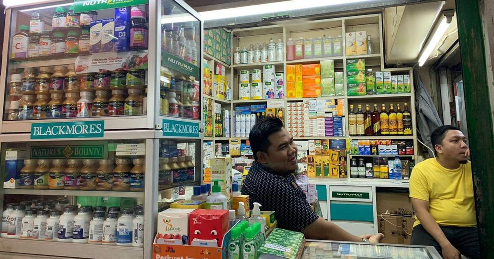

Profil
Toko Sehat Abadi adalah sebuah konsep usaha yang mengusung nilai-nilai kesehatan, kebugaran, dan kesejahteraan sebagai fokus utama. Konsep ini didedikasikan untuk menyediakan berbagai produk dan layanan yang mendukung gaya hidup sehat dan optimal bagi para pelanggan. Dengan berbagai produk seperti suplemen nutrisi, makanan organik, peralatan olahraga, produk perawatan diri alami, dan lain sebagainya, Toko Sehat Abadi bertujuan untuk memfasilitasi individu dalam merawat kesehatan fisik dan mental mereka. Selain menyediakan produk-produk berkualitas tinggi, Toko Sehat Abadi juga berperan sebagai sumber informasi dan inspirasi bagi pelanggan dalam mengadopsi pola hidup sehat. Melalui pengetahuan dan panduan yang diberikan, toko ini membantu pelanggan untuk mengambil keputusan yang bijak terkait makanan, olahraga, dan praktik sehat lainnya. Pentingnya memelihara kesehatan jangka panjang menjadi fokus utama Toko Sehat Abadi, yang berupaya membantu orang-orang mencapai kesejahteraan yang berkelanjutan dan abadi. Dengan memadukan produk berkualitas, layanan bermanfaat, dan pendekatan holistik terhadap kesehatan, toko ini menjadi destinasi unggulan bagi mereka yang ingin menjalani gaya hidup sehat secara konsisten.